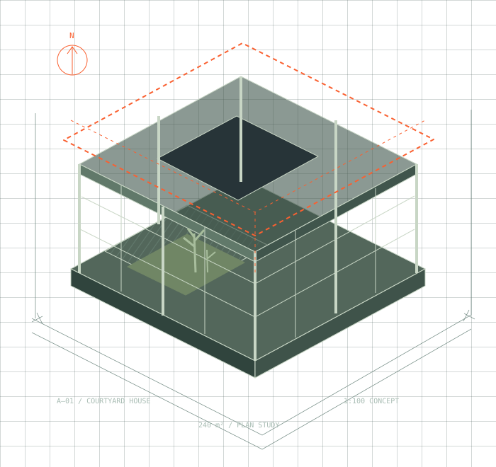

Brief & feasibility
Give the idea a purpose, a boundary and a useful set of questions.
Before the concrete. Before the first beam. There is a plan that brings everything together.
Find your starting point ↗
Construction is a thousand decisions, connected. This concept explores a simpler way to make the important ones first.
Understand the people, place and purpose.
Connect the ambition to a practical sequence.
Let clear scope guide the work ahead.
Explore how size and specification change an illustrative construction allowance. Synthetic rates, in demo currency units (CU). This is not a quote or professional cost advice.
Excludes land, tax, permits, professional fees and local market effects. Scenarios use fixed illustrative rates and a ±15% range. No information is submitted.
Give the idea a purpose, a boundary and a useful set of questions.
Test spatial choices before they become site decisions.
Turn a coordinated plan into an understandable sequence.
A strong foundation
starts with a conversation.